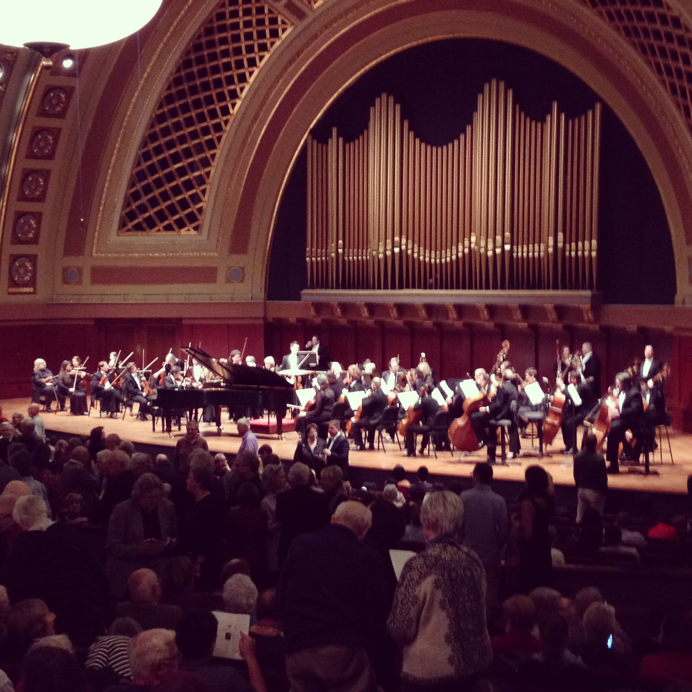
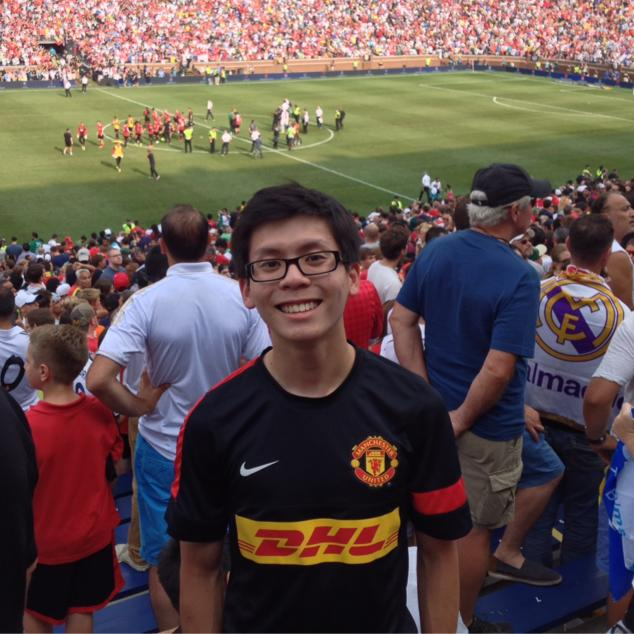
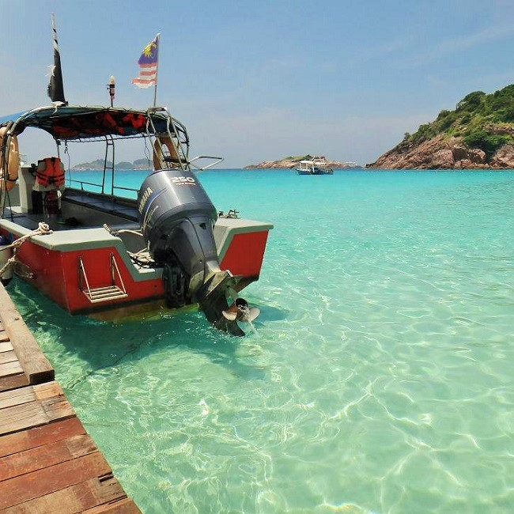

Music
As the firstborn son, my parents didn't actually consider sending me to music classes. The idea of learning the piano (the first ever musical instrument I know of) came when my parents were inquiring music lessons for my sister in a music school. They thought that a girl would be more suitable to learn the elegant instrument, but as a curious eight year old I immediately pestered them to go for these lessons. As far as I could remember, I was mainly curious about the instrument, than being interested in learning it.
That incident has since changed and affected me to be the person I am today. I took piano lessons for more than 10 years, which I grew to love the instrument, and classical music as well. In that period, I went from being stubbornly reluctant to passionately eager to practice and learn the instrument. Thanks to my parents' and teacher's unwavering commitment in ensuring that I do my daily bit of practice, I have managed to become a slightly-better-than-average piano player who has the ability to tackle challenging pieces without the talent to master them. Despite that, I still love classical music a lot (and to play them myself especially), discovering glimpses of its magnificence every once in a while. My second favourite music genre would be jazz, and blues would be right after that.

Nowadays, I still have the habit of practicing the piano, which to me is more of a hobby and a stress reliever than a chore. I also like attending classical music concerts, operas and plays, which are of an abundance in the United States. I was a LSA Music Minor at the University of Michigan, which I had the pleasure of learning from brilliant professors and instructors, many of which are rather well known. I took mainly composition and musicology courses, since the idea of performing daunted me, which I enjoyed immensely.
Projects
This work was written for the Malaysia Midwest Games Closing Ceremony - Midwest Night's opening performance. Using the theme of Johann Pachabel's Canon in D, I made a medley with some waltzy motives that combined the crowd-favourite tune with a Malay '90s hit pop song for the flute, alto saxophone, piano, two violins, and a drum. Due to my lack of knowledge in composing for the drum, the drum parts were instructed verbally instead with much involvement of the player's creativity.
This was my end-of-semester project in my first composition course, where we had to have our compositions performed, either by ourselves or by other musicians. I wrote this piece primarily to dedicate it to a person that I admired then, who is a great dancer. The harp and tenor saxophone was chosen as my two other voices in this project because I could only find a harpist and a saxist to perform with me.
This was my very first proper attempt in composition. Composed as my mid-semester project, I wrote this simple piece with much effort in attempting counterpoint melodies, which was the main goal of the project. I didn't have a title for it, but called it 'First Fall' when asked to by my professor, only because it was my very first fall semester at the University of Michigan.
Sports & Outdoor Activities
As mentioned in my background section under my profile, I grew up with minimal exposure to electronic entertainment, due to my father's doctrine of the goodness of the outdoors. And so, I busied myself with sports or whatever kinds of outdoor activities I could find as my hobby.
My favourite sport is football, a.k.a. soccer by my American friends, which I still do play almost once every week today. Football was one of the earliest sports I tried, and exposure to football matches on the TV intensified my passion for the sport. But being an organized team sport, I resort to playing tennis often when it was hard to find football buddies. I also enjoy swimming a lot, which gives me a sense of empowerment.
Being an outdoor person, I love sceneries of isolated tranquil, which I get to enjoy often when I go hiking or travelling. I appreciate the greatness of the natural world immensely, and am a big fan of beaches and national parks.